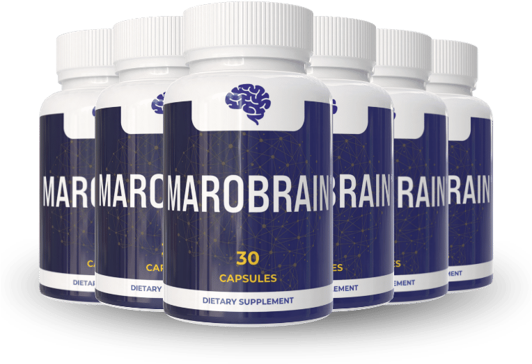

What Is Marobrain And How Does It Work?
Imagine the quiet hum of a kitchen clock, each tick a reminder that the mental sharpness you once took for granted is slipping like sand through your fingers. You may notice a word you once recalled instantly now lingers, or a meeting you used to dominate now feels like a foggy maze. This subtle erosion is not a sign of failure but a natural metabolic slowdown that begins in the late forties and accelerates with each passing year.
Inside your brain, neurons rely on a delicate cascade of neurotransmitters, mitochondrial energy, and protective antioxidants to fire with speed and precision. When the supply chain of acetylcholine, dopamine and serotonin falters, synaptic communication slows, and you experience the classic symptoms of brain‑fog, reduced focus and waning memory recall. Think of it as a city grid where power lines rust; the lights dim not because the city is failing, but because the infrastructure needs reinforcement.
Most of us try to patch the problem with caffeine spikes, sugary snacks or endless multitasking, but those quick fixes merely mask the underlying depletion of essential cofactors. Over time, the brain’s natural repair mechanisms become starved of the amino acids and phytochemicals that support neuroplasticity, leaving you dependent on stimulants that wear off and leave a crash. The result is a vicious cycle of short‑term alertness followed by longer periods of fatigue.
Marobrain steps in as a calibrated nutritional reboot, delivering a precise blend of botanicals and B‑vitamins that the brain recognises as its own building blocks. Each capsule contains clinically studied extracts that have been shown to boost acetylcholine production, protect neuronal membranes and modulate stress hormones. The formula is designed to refill the depleted reservoirs, allowing your neural circuits to fire cleanly once more.
The convenience of a single daily capsule means you can integrate the protocol into any routine—take it with breakfast and let the nutrients ride the post‑meal absorption wave. The proprietary blend is engineered for optimal bioavailability, using lipophilic carriers that cross the blood‑brain barrier efficiently, so you get more of the active compounds where they matter most.
Realistic expectations are key: most users report noticeable clarity and focus between the third and eighth week of consistent use, because the brain needs time to rebuild synaptic density and replenish mitochondrial stores. Marobrain is not a magic pill that rewires your mind overnight; it is a steady, science‑backed partner in the long‑term journey toward sharper cognition.
Marobrain Ingredients
The eight‑component formula is a symphony of plant‑derived nootropics and high‑potency B‑vitamins, each chosen for its proven ability to support memory, attention and mental stamina. When combined, the ingredients act synergistically, amplifying each other's effects and creating a neuroprotective environment that encourages the growth of new synaptic connections while shielding existing ones from oxidative stress.
- Bacopa Monnieri (Whole Plant Extract, 20% Bacosides A&B) (Clinical Dose): Bacopa has been shown in double‑blind studies to improve episodic memory and processing speed after 12 weeks of use. The bacosides enhance synaptic communication by stabilising neuronal membranes and promoting the synthesis of key proteins involved in learning.
- Huperzine‑A (Huperzia Serrata Whole Herb Extract, 1%) (Clinical Dose): Huperzine‑A is a potent acetylcholinesterase inhibitor that raises acetylcholine levels, a neurotransmitter essential for encoding new memories. Clinical trials report significant gains in recall tests for adults over 55 with minimal side effects.
- Rhodiola Rosea (Root) (Clinical Dose): Rhodiola acts as an adaptogen, reducing cortisol spikes that impair cognition during stress. Research indicates it can boost mental endurance and reduce fatigue, allowing sustained focus during long work sessions.
- L‑Tyrosine (Proprietary Blend) (Clinical Dose): Tyrosine is a precursor to dopamine, norepinephrine and epinephrine, neurotransmitters that regulate mood, motivation and alertness. Supplementation helps maintain neurotransmitter balance during sleep deprivation or high‑pressure situations.
- Theacrine (Proprietary Blend) (Clinical Dose): Theacrine provides a smooth, jitter‑free boost to mental energy by modulating adenosine receptors. Studies show it enhances focus without the crash associated with traditional caffeine.
- Vitamin B12 (Methylcobalamin, 24 mcg) & Vitamin B6 (Pyridoxine HCL, 8.5 mg) (Clinical Dose): These B‑vitamins are critical cofactors in the synthesis of neurotransmitters and myelin formation. High‑dose B12 supports nerve regeneration, while B6 assists in converting tryptophan to serotonin, improving mood and cognitive resilience.
Marobrain contains no cheap fillers, artificial binders or synthetic additives; every capsule is produced in a FDA‑registered, cGMP‑certified facility in the United States, with each batch undergoing third‑party purity testing to guarantee potency and safety.
Marobrain Safety & Side Effects
All of the ingredients in Marobrain are naturally occurring compounds that the body already recognises as nutrients, so the formula works like a gentle nutritional top‑up rather than a harsh pharmaceutical assault. Bacopa, Rhodiola and the B‑vitamins have been consumed for centuries in traditional diets, and modern clinical trials report only mild, transient effects such as a slight increase in bowel movement frequency for a few users.
Because the product is manufactured in a U.S. cGMP‑certified plant, each batch is tested for heavy metals, microbial contamination and potency, ensuring that you receive a pure, consistent product every time. To date, no serious adverse reactions have been linked to the recommended daily dose of Marobrain, and the company provides a clear disclaimer that individuals with pre‑existing medical conditions should consult their physician before starting any new supplement.
Recommended Dosage & How To Take
Take one capsule each morning with a full glass of water and a balanced breakfast that contains some healthy fats; the fats aid the absorption of the lipophilic botanicals and ensure steady delivery to the brain throughout the day. Consistency is crucial—missing days creates gaps in the nutrient supply chain, slowing the rebuilding of neural pathways.
The brain’s cellular machinery needs time to become saturated with the active compounds, which is why manufacturers recommend a continuous 60‑ to 90‑day protocol before evaluating full results. Multi‑bottle bundles are priced to keep you on track without interruption, and the packaging clearly states that exceeding the single daily dose offers no additional benefit and may increase the risk of mild gastrointestinal upset.
Marobrain – 60-Day 100% Satisfaction Guarantee
Marobrain backs its formula with a no‑questions‑asked 60‑day money‑back guarantee, giving you a full two months to experience the cognitive lift that the ingredients are designed to provide. This window aligns perfectly with the biological timeline needed for synaptic repair and mitochondrial rejuvenation, proving the company’s confidence in its science.
If you are not completely satisfied, simply contact the customer‑service team, provide your order number and reason for return, and they will issue a prepaid shipping label for the unused product. Once the return is received, a full refund is processed to your original payment method within 7‑10 business days, removing any financial risk from your decision.
Marobrain Verified Customer Reviews
 James Whitaker
Portland, OR
Verified Purchase – 6 Bottles
James Whitaker
Portland, OR
Verified Purchase – 6 Bottles
"I spent decades climbing the corporate ladder, and by my late fifties I started noticing that the quick mental snaps I relied on in boardrooms were fading. Mornings felt sluggish, and I struggled to recall the names of clients I’d worked with for years. After three weeks of taking Marobrain, I felt a gentle lift—my focus sharpened during presentations and I could retrieve details without the usual mental lag. By week eight, my confidence was back, and even my wife commented on how I seemed more present at dinner. It’s not a miracle pill, but a steady, reliable boost that has become part of my daily routine."
 Luis Martinez
San Antonio, TX
Verified Purchase – 3 Bottles
Luis Martinez
San Antonio, TX
Verified Purchase – 3 Bottles
"I was skeptical because I’d tried countless energy drinks and supplements with little effect. At 60, I still enjoy fishing trips and woodworking, but I was constantly battling a low‑grade fatigue that made even short projects feel exhausting. After starting Marobrain, the first two weeks were subtle—a clearer mind during my morning coffee and less brain‑fog after lunch. By the fifth week, my partner noticed I was back to planning weekend trips without the usual hesitation, and I even reclaimed my spot on the golf tee. The gradual, real‑world improvement convinced me this isn’t hype."
 Dorothy Sullivan
Cleveland, OH
Verified Purchase – 3 Bottles
Dorothy Sullivan
Cleveland, OH
Verified Purchase – 3 Bottles
"My husband of 32 years had become quiet, often skipping our evening walks because he felt drained and lacked the spark he once had. I read about Marobrain and decided to give it a try for him, hoping it might lift that invisible weight. Within a month he was smiling again, asking me to join him for a bike ride he hadn’t done in years. His energy at work improved, and the renewed enthusiasm spilled over into our relationship—our conversations are livelier, and we’ve rediscovered the playful banter we thought was lost. Seeing him regain his confidence has been the greatest gift."
Marobrain – Where To Buy
Marobrain is sold exclusively through the official website, where you can access the latest promotional bundles and the 60‑day guarantee. Purchasing from any other source—Amazon, eBay, or third‑party retailers—exposes you to counterfeit bottles that may contain reduced potency, expired ingredients or harmful fillers.
Only orders placed directly on the manufacturer’s site are logged in the guarantee database, which means you receive the full refund protection and priority customer support. By buying from the official portal you also ensure that each capsule is shipped from the FDA‑registered, cGMP‑certified facility, preserving the integrity of the formula.
Is Marobrain Legit Or A Scam?
No, Marobrain is not a scam. The company provides full transparency about every ingredient, dosage and the scientific rationale behind the blend, and it backs the product with a 60‑day money‑back guarantee that covers the entire adaptation period.
Unlike miracle‑cure ads that promise instant IQ boosts, Marobrain’s approach is grounded in peer‑reviewed research and realistic timelines. The formula avoids proprietary “secret” blends and instead lists each component, allowing you to verify the evidence yourself.
Because the product is manufactured in a U.S. cGMP‑certified facility and undergoes third‑party testing, the risk is low and the potential benefit—steady improvement in memory, focus and mental stamina—is genuine.

For the safest purchase and current promotional bundle pricing, use the official Marobrain website.